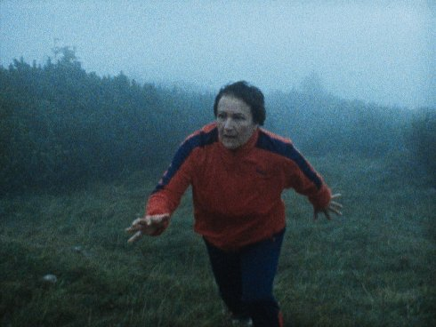

Die Kinder der Toten

Kelly Copper, Pavol Liška
|
AT
2019
90 min | Super8 on HD | silent with German intertitles
B+DOP+E: Kelly Copper, Pavol Liška
Text: Elfriede Jelinek | S: David Almeida-
Ribeiro | M: Wolfgang Mitterer
P: Ulrich Seidl | D: OlympFilm | With Andrea Maier, Greta
Kostka, Klaus Unterrieder
|
Friday | 11 oct 10.30 pm | werkstattkino
In her 666-page ghost novel “The Children of the Dead”, Elfriede
Jelinek allows the deceased to rise again – even those with swastikas
and yellow stars usually so gladly forgotten. Can Jelinek’s themes be
adapted to film, not to mention her way with language? The directorial
duo from the Nature Theater of Oklahoma were unafraid to try,
conscious that the idea might not work. Using amateur actors and Super
8 film in the original Styrian settings, they carried out a
transposition, to borrow a musical term: from text to silent film,
complete with brass-band music. Or rather a “heimat” film, a
home-movie horror, in which the vulgar and the ridiculous
survived the shift intact.
Kelly Copper born 1971 in
Gainesville, Florida, USA. In 1996 she founded the Nature
Theater of Oklahoma with Pavol Liska in New York. The Children
of the Dead is her first film.
|
Pavol Liška born
1973 in Skalica, Czechoslovakia. The Children of the Dead is
his first film.
|

{kind=link}